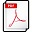

Curriculum vitae
Une version pdf de mon cv :  .
Élève-Ingénieur en Informatique
Formations.
| Depuis 2008 |
ISIMA(Institut Supérieur d'Informatique, de Modélisation et de leurs Applications) Option : Génie Logiciel et Systèmes Informatiques à Clermont-Ferrand (63) |
| 2006-2008 |
Élève en classe préparatoire aux grandes écoles (Techniques et Sciences de l'Ingénieur) à Albi (81) |
| 2003-2006 |
Baccalauréat STI – Option : Électronique , Mention Très Bien. Lycée Alexis Monteil à Rodez (12) |
Connaissances.
| Langages | C, C++, C#, Java, Scala, Matlab, UML, Objective-C (IOS),VB.NET, Fortran90, LISP, LaTeX. |
| Web | HTML5, CSS 3.0, PHP, Javascript. |
| Outils | Visual Studio 2008, 2010, Eclipse, NetBeans, ArgoUML, Umbrello, MSProject. |
| SGBD | OracleDB, MySQL, SQL Server, PhpMyAdmin. |
| Sciences de gestion | Communication, Gestion, Droit, Gestion de projets, Management. |
Stages et alternance.
| Sept 2011- Sept2012 |
Manufacture Française des pneumatiques Michelin, Clermont-Ferrand (63) Gestion de phase de test et développement d’applications tierces servant à l’intégration d'un logiciel d'analyse de l'information dans le contexte Michelin. Développement d’un client de consultation de brevets à partir du Web-Service RESTful OPS (Open Patent Service). Participation à l'élaboration d'un prototype de moteur de recherche d'information scientifique (articles et brevets) dans un contexte d'entreprise. |
| Avr-sept 2011 |
CEA (Commissariat à l'énergie atomique), Fontenay-aux-Roses (92) Réalisation d’un simulateur de propagation d’incendie dans une centrale en langage C++ utilisant la bibliothèque de classe MFC. Cet outil sera utilisé en cas de crise pour définir un plan d’intervention. |
Projet.
| 2012- Actuel |
Projet open-source Java-Sci Développement d'un framework scientifique en Java. |
| 2011-2012 |
Projet de 3ème année LIMOS – Jonathan Passerat-Palmbach (Scala, OpenCL, GP-GPU) Insertion d'un nouveau paradigme de programmation dans le projet open-source ScalaCL |
| 2010-2011 |
Projet de 2ème année CNRS - David Hill (Modélisation par Objets, UML, Méta-Modélisation) Modélisation de modèles métiers orientés objets développés pour les réseaux ferrés Français. |
Activités extra-scolaire.
- - Capitaine de l’équipe de rugby de l’ISIMA.
- - Intervenant du job-service IMAGE de l’ISIMA.